Inno99 · Inno Talks #3 · L'Aquila
Giovedì 19 novembre la Sala Rivera di Palazzo Fibbioni, ai Quattro Cantoni, ha ospitato il terzo Inno Talk di Inno99, gli aperitivi dell'innovazione ideati da Mirko Rocci e Federico Fioriti per Innovalley. Oltre cinquanta tra studenti, ricercatori, imprenditori e giovani del servizio civile hanno riempito la sala per «Le imprese del Tecnopolo», la prima serata del ciclo con un intermezzo poetico-letterario. Qui trovate il reel, le foto e il racconto della serata.
Per chi non c'era, la serata in poco più di due minuti, con le voci dal palco e gli applausi della sala.
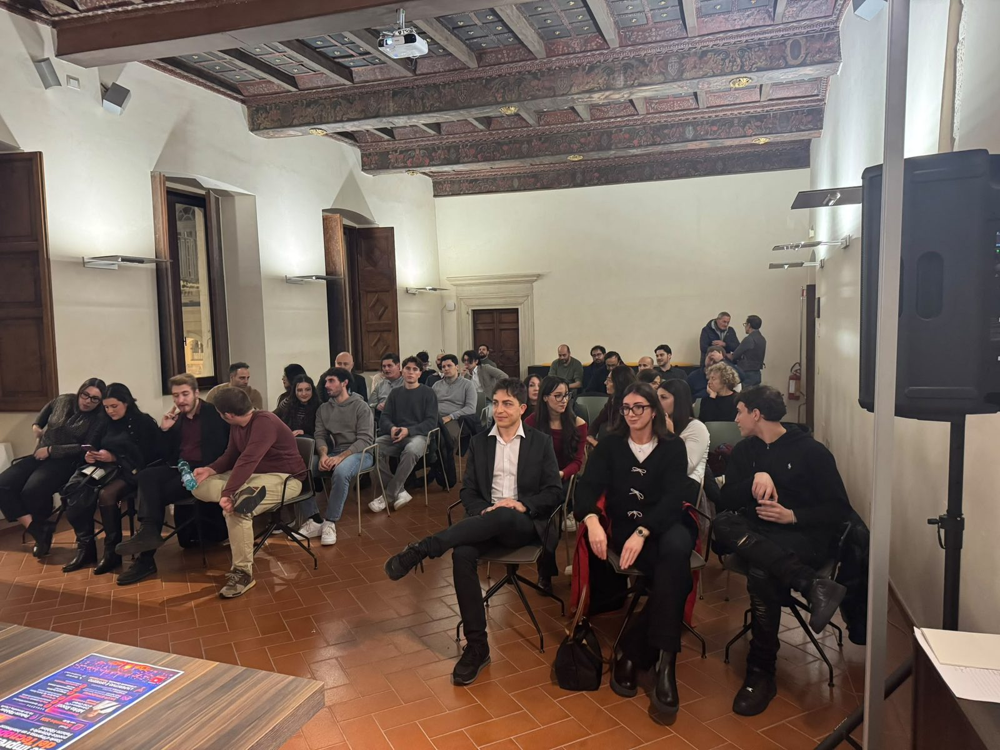
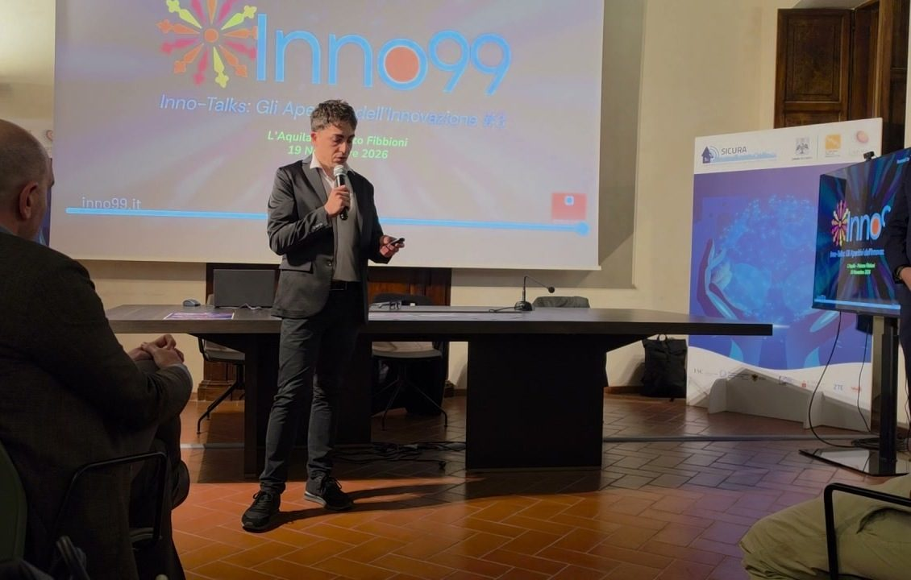
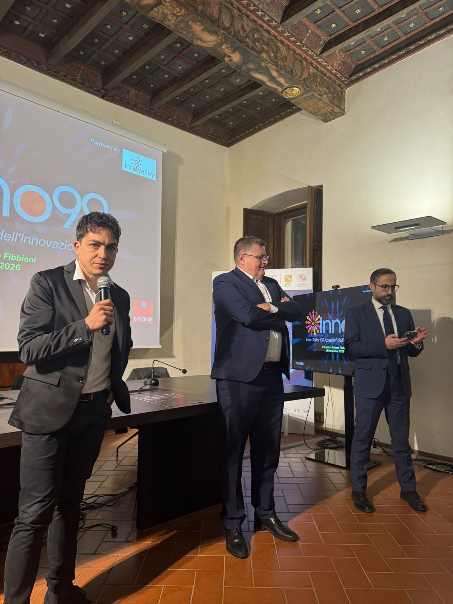
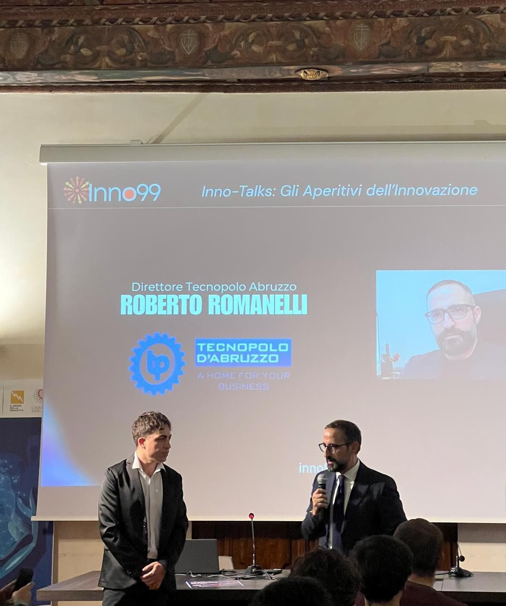
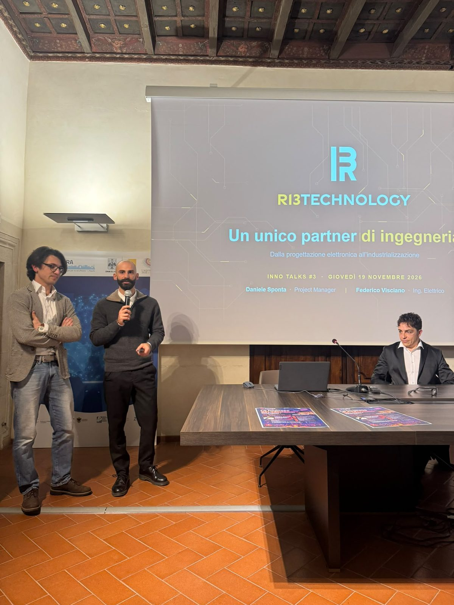
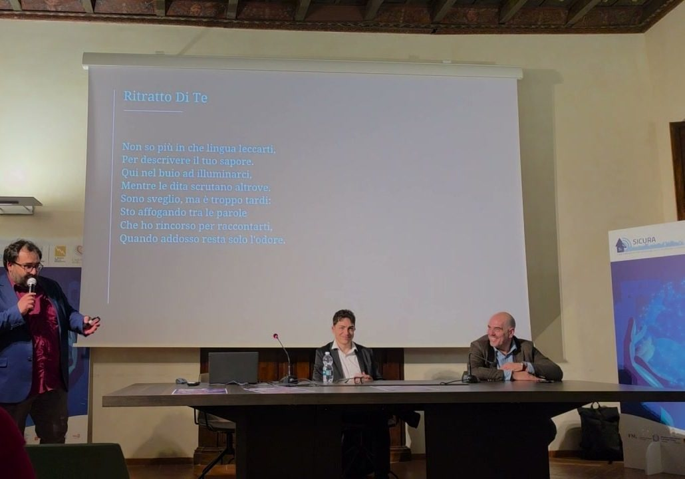
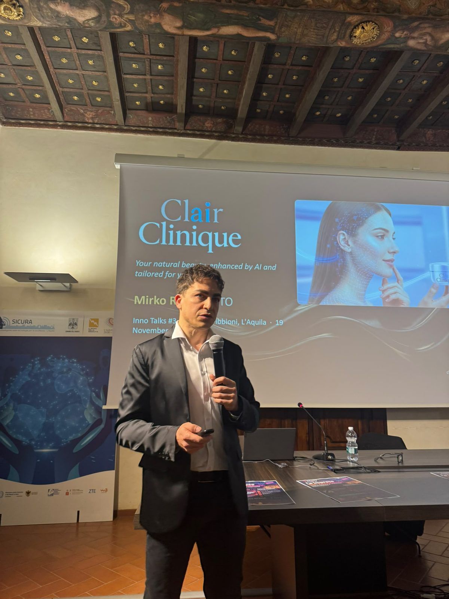
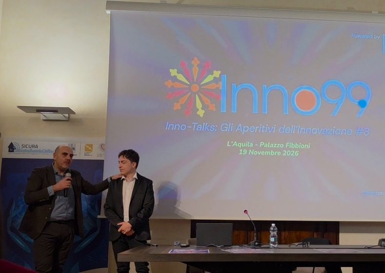
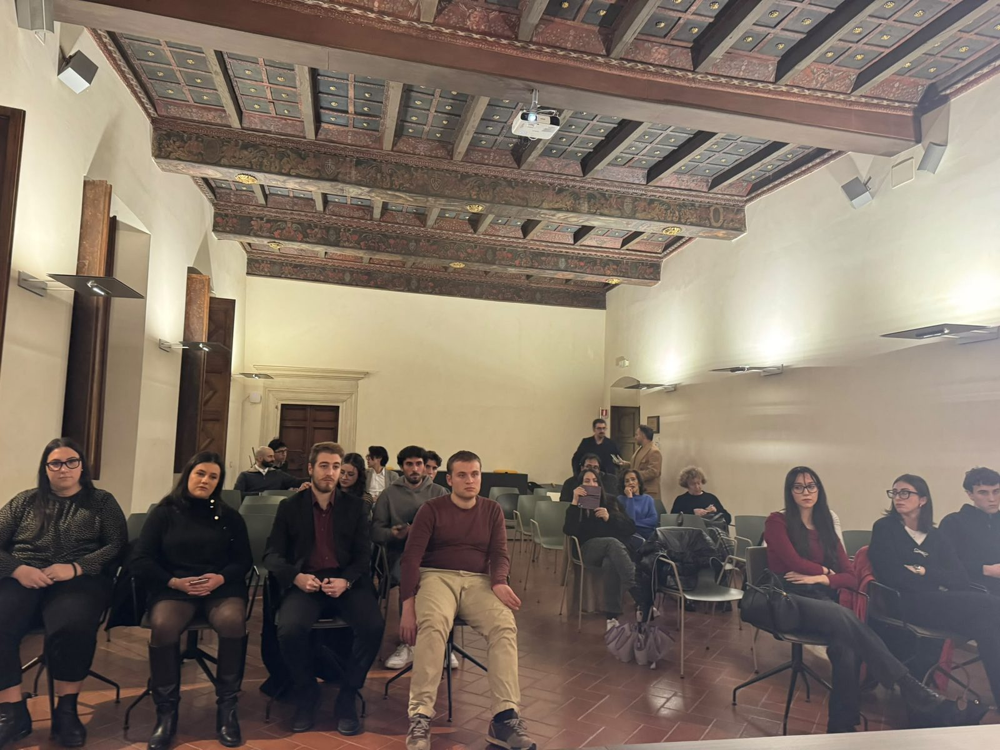
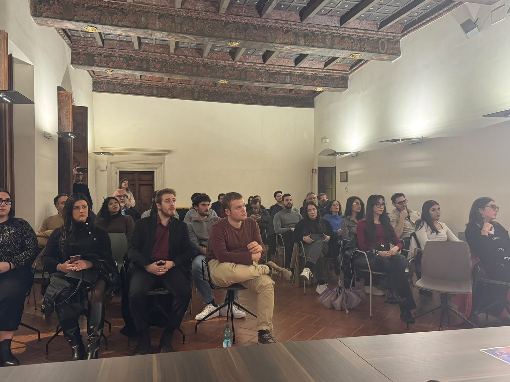
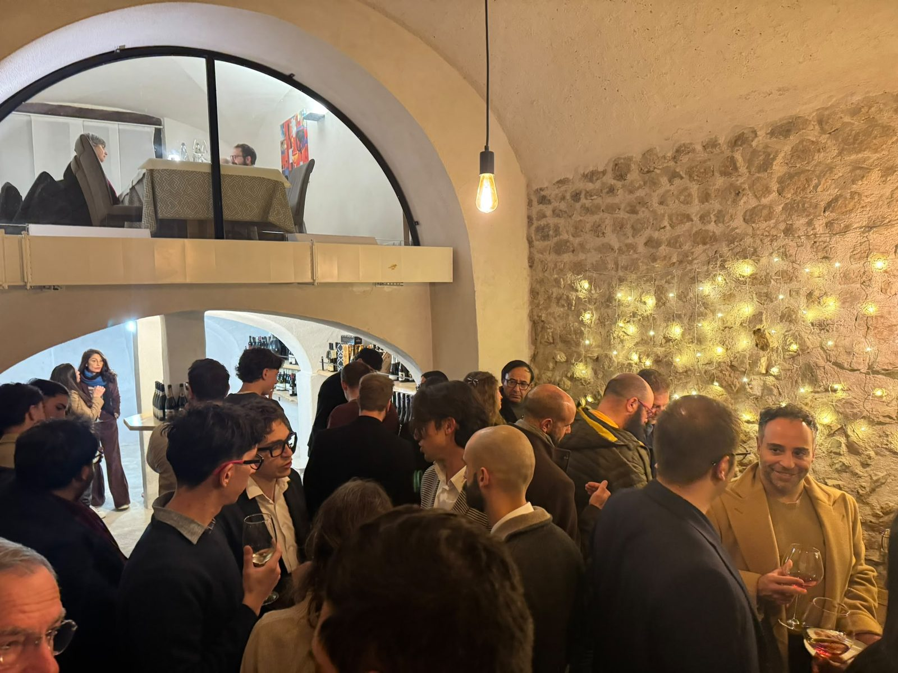
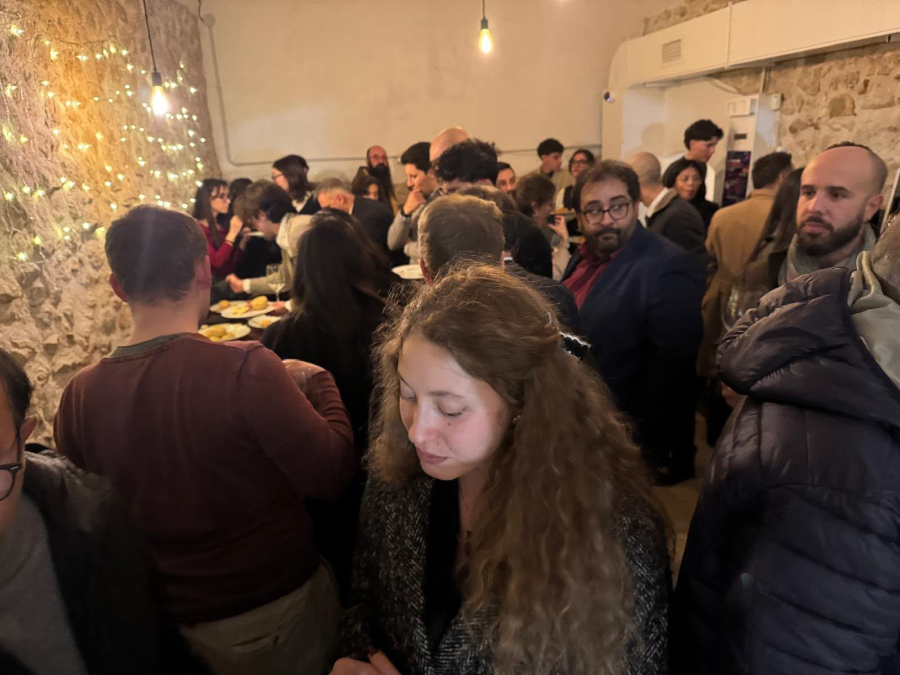
A condurre la serata è stato Mirko Rocci, fisico, co-ideatore e curatore di Inno99, che in apertura ha ricordato l'obiettivo del progetto, fare cultura dell'innovazione e far crescere all'Aquila una comunità di persone capaci di innovare il territorio. L'assessore regionale alla Cultura Roberto Santangelo ha portato il saluto della Regione Abruzzo.
Non è la prima volta che le imprese del polo salgono sul palco degli Inno Talks, ha ricordato il direttore generale del Tecnopolo d'Abruzzo Roberto Romanelli. Il Tecnopolo, ha spiegato, non si esaurisce nei suoi venti ettari di laboratori ed è «soprattutto una comunità di supporto alla crescita», e serate come questa servono a rimettere al centro la città. Ha poi presentato R13 Technology come «un'azienda fatta di giovani per i giovani».
Per R13 sono intervenuti l'ingegnere elettrico Federico Visciano e il project manager Daniele Sponta, che hanno raccontato un'azienda nata come spin-off di due studenti dell'Università dell'Aquila e oggi forte di sedici dipendenti, tutti laureati, e oltre cento progetti.
L'aquilano Marco Pace, intermediario assicurativo di professione e poeta-cantautore per passione, ha scherzato su un invito che con il suo lavoro non ha nulla a che vedere e ha cercato nei processi creativi il punto d'incontro fra arte e scienza. Rocci ha poi presentato L'AquiLive, l'app gratuita con eventi e servizi della città, e Clair Clinique, la startup di cosmetica personalizzata nata al Tecnopolo, di cui è cofondatore.
Nel saluto finale Romanelli ha parlato di Rocci, un fisico che si è formato in Italia e all'estero e ha scelto di rientrare anche se fuori le opportunità non gli sarebbero mancate, e ha annunciato che il Tecnopolo sta pensando a un ruolo per lui all'interno del polo.
«Stiamo ipotizzando quale ruolo, ma sicuramente andrà a rivestire un ruolo di guida scientifica.»Roberto Romanelli
La serata si è chiusa con l'Aperitivo dell'Innovazione al Ristorante Connubio, nelle cantine dello stesso palazzo.
«Vedere Palazzo Fibbioni così pieno di ragazzi, imprenditori e ricercatori ci dice che la città ha voglia di innovazione. Non capita spesso di trovare tutto questo in una sola sala, e Inno99 vuole che all'Aquila diventi un'abitudine.»Mirko Rocci
Rocci ha ringraziato il Tecnopolo d'Abruzzo, Federico Fioriti, Innovalley, lo sponsor Synergie Italia e tutte le persone che hanno riempito la sala. L'ultimo Inno Talk dell'anno è in programma a metà dicembre, con data e ospiti non ancora definiti.
Sul sito di Inno99 trovate il programma della serata, gli ospiti e le foto.